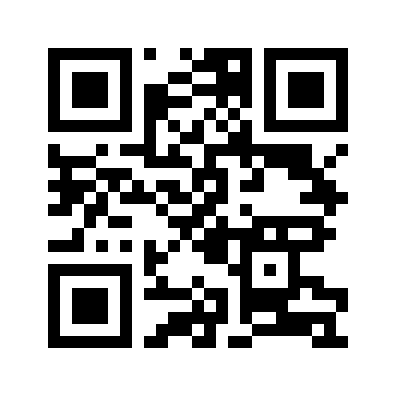

PortableTAK Quick Start
Your TAK server on a USB drive. Plug it into an OpenMANET node, a Windows computer, a Mac, a Linux computer or a Raspberry Pi.
Before you start: this drive has already been set up with a server name, an
administrator password (dashboard sign-in) and a client password (phones use it to enroll).
You need those two passwords. Blank drive? The first time it starts on Windows, it asks you
for the server name and both passwords.
A. On an OpenMANET node (no screen)

Scan to open the dashboard
- With the node powered on, plug the drive into a blue USB 3 port.
- Wait 3–5 minutes. The first start on a new node takes longer while it sets itself up for that node.
- Connect your phone or laptop to the node's Wi-Fi.
- Scan the QR code (or open
https://10.41.250.10:8444). Your browser warns about the
certificate the first time: choose Advanced → Continue.
- Sign in as
administrator with the administrator password.
B. On a Windows computer
- Plug in the drive. Open it in File Explorer and double-click Start PortableTAK (Windows).
- Click Yes when Windows asks for permission. The first time on a computer, it installs what it
needs (and may ask to restart once; then double-click it again).
- The dashboard opens in your browser. The window shows this computer's address for phones and WinTAK.
- The drive disappears from File Explorer while the server runs. That is normal.
- To finish, double-click Stop PortableTAK on the desktop, wait for "You can remove the drive now",
then unplug.
Needs Windows 11 (22H2 or newer). Phones and WinTAK must be on the same network as the computer.
C. On a Mac (Apple Silicon)
- One time: install QEMU (in Terminal:
brew install qemu).
- Plug in the drive and double-click Start PortableTAK (Mac) on the PORTABLETAK volume. Enter your Mac password when asked.
- The dashboard opens. The window shows this Mac's address for phones and WinTAK. If macOS asks whether qemu may accept incoming connections, click Allow.
- To finish, press Return in that window (or double-click Stop PortableTAK on the Desktop), then eject and unplug.
C2. On Linux or a Raspberry Pi (64-bit)
- Plug in the drive and open a terminal in the PORTABLETAK volume.
- Run
sudo bash "Start PortableTAK (Linux).sh". The window shows this computer's address for phones; the dashboard is http://localhost:8090.
- After that it starts by itself when the drive is plugged in. Before unplugging:
sudo portabletak stop.
D. Add a phone (ATAK, iTAK) or WinTAK
- In the dashboard open Users → Create User, one user per person. (In the TAK app, give every device its own callsign.)
- Under Manage User / Download Setup Package, choose how to connect the device:
- ATAK: ATAK Package, then import it in ATAK (Import → Local SD). WinTAK: WinTAK Setup.
- iTAK: iTAK Package, opened in iTAK. For use over cellular, also import the
iTAK Remote Package (iTAK uses one server per package).
- QR: ATAK QR Setup / iTAK QR Setup, scanned in the TAK app. iPhone, once first: iPhone Trust Profile (for QR) in Client Setup (open it in Safari on the iPhone), install it, then turn on full trust in Settings → General → About → Certificate Trust Settings (without this switch iTAK says "error connecting to the server"). ATAK must trust the server first: import the ATAK Trust Package (for QR) from Client Setup once per phone. With remote access set up, ATAK QR Setup also adds the "(Tailscale)" server for cellular.
- The connection turns green in the TAK app when connected.
E. Before unplugging the drive
Node: press Safe Remove in the dashboard (Server section) and wait for "safe to remove".
Windows / Mac: double-click Stop PortableTAK on the desktop (the dashboard's Stop Server
only pauses the TAK services; it does not release the drive). If power is lost, PortableTAK
checks and repairs the drive by itself on the next start.
F. Use it over cellular (remote access)
Lets phones reach the server from anywhere with internet. It uses Tailscale, a free private network.
Do this once per server; it needs an internet connection on the server side.
1. Make a Tailscale account at tailscale.com (free). Use the same account everywhere below.
2. Connect the drive to Tailscale (the same on a node, Windows or Mac; the server needs internet):
Dashboard → Remote Access → Enable remote access → open the link shown → sign in → Connect.
Back in the dashboard press Finish setup and wait about 2 minutes. The drive keeps this Tailscale address
wherever it runs, so you only do this once. The computer does not need the Tailscale app.
3. On each phone: install the Tailscale app from the App Store / Play Store, sign in with the
same account, and switch it on (allow the VPN when asked).
4. Set up each phone after step 2 (Users → your user): ATAK QR Setup or the ATAK Package on
Android: either one gives the phone two servers, "server name (Wi-Fi)" or the address, and
"server name (Tailscale)". On iPhone import the iTAK Remote Package (or scan iTAK QR Setup with "Phone is on: Tailscale")
as well as the normal one. Phones set up before step 2 need setting up again.
5. Test: turn the phone's Wi-Fi off. With Tailscale on, the server connection turns green over cellular.
6. Open the dashboard from anywhere: on any phone or laptop with the Tailscale app on (same account),
open https://<Tailscale address>:8444, for example https://100.102.110.115:8444.
The address is shown under Remote Access and is the same wherever the drive runs: write it down.
Accept the browser warning (Advanced → Proceed), then sign in as on Wi-Fi.
Not working? The Tailscale app must be on and signed in to the same account on the phone,
the server side must have internet, and the phone must have the new package.
G. More in the dashboard
On a computer the dashboard has a menu on the left: click a section to open it as a page. On a phone it is one
scrolling page: tap a section's title to open it.
- 🗺 Live Map (top of the dashboard): every phone, aircraft, ship, radio and marker. Save Offline maps while online for use without internet.
- Live Feeds: aircraft (internet or a USB radio) and ships (internet) on the map and, for users on the ADS-B / AIS channel, in ATAK.
- Video Feeds: drones, the TAK ICU app and cameras; press Watch to see a feed in the browser.
- ATAK Plugins: upload a plugin; phones install it from ATAK → Plugins → ⋮ → Sync, without internet.
- Data Packages: upload a file (map overlay, PDF, image or ATAK data package) and send it to phones.
- Meshtastic: Meshtastic radios on the map and in ATAK.
More help: PortableTAK Quick Reference (addresses, ports, common tasks) and
PortableTAK Setup and Troubleshooting Guide (everything in detail).